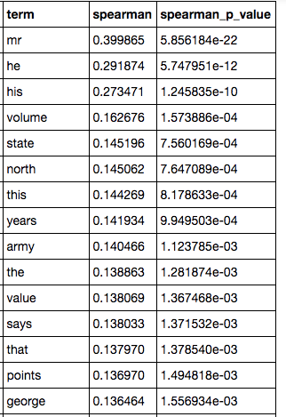
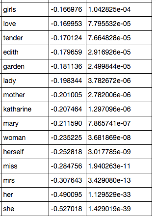
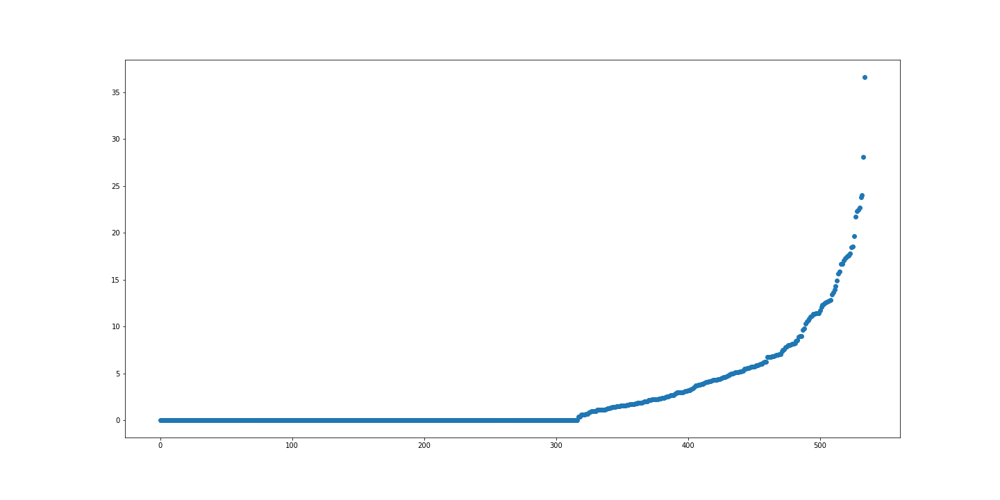
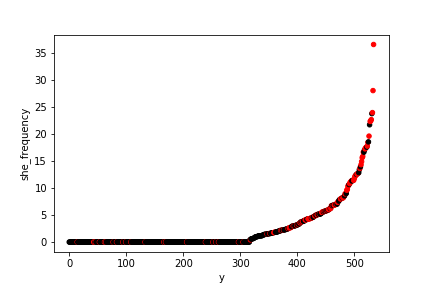

class: middle # Textures of Taste: ## Uncovering the Material and Linguistic Codes of Historical Book Reviews <hr> #### Matthew J. Lavin #### Clinical Assistant Professor of English and Director of Digital Media Lab #### University of Pittsburgh #### Materialities of Writing Works-in-Progress Symposium #### @mjlavin80 --- class: middle ## <blockquote>"In this collection of seven stories the author has shown a great deal of deep feeling and real ability, but many of the stories are too ambitious, and seem to be more the work of promise than of fulfillment." (<em>The New York Times</em>)</blockquote> --- class: middle ### <blockquote>"<em>The Troll Garden</em> is a collection of freak stories that are either lurid, hysterical or unwholesome." (Bessie du Bois for <em>The Bookman</em>) --- class: middle ## We need a more comprehensive study of the rhetorical and material norms of the book review itself. --- class: middle ### For many, reviews are everyday documents so familiar as to seem self-evident, pure expressions of recommendation, condemnation, or something between the two. --- class: middle ## Book historians and book historically sensitive literature scholars have worked extensively against the idea that review's text should be considered in apart from its publishing context. --- class: middle ### My talk today is a methodological experiment but, foremost, it attempts to engage with existing scholarship on the turn-of-the-century American book review. --- class: middle ## How did book reviews in <em>The New York Times</em> represent or code gender around the turn of the century? Were there any clear associations with instruction, morality, sentiment, and genre? --- class: middle ### Web accessible, web searchable, and computable are three distinct levels of digital access. --- class: middle ## To convert <em>New York Times</em> pdfs to a computable corpus, I took several difficult and impressive steps. :) - Get metadata from NYT API - derive pdf URLs - Download all pdf content from NYT website - OCR all pdfs with AbbyyFinereader - Construct lightweight database to associate each OCR text block with original metadata - Label all content "Single focus review" or "other" - narrows 3,400 items to 1000 - Label author and assumed gender of all reviews that list author in headline --- class: middle  --- class: middle  --- class: middle ## Machine Learning Steps - Process uncorrected OCR to make more accurate - Remove punctuation, numerals, non alphabetic characters - Convert to term frequency tables - Train logistic regression model using term frequencies and gender labels for 435 reviews - Make predictions on 100 reviews - Compare predictions to labels - Record results, reshuffle train and test set members, repeat --- class: middle ## Understanding Logistic Regression <hr>  --- class: middle ## Logistic Regression by Gender  --- class: middle <table class="table table-bordered table-hover table-condensed"> <tbody><tr> <td>Predicted Male</td> <td>Labeled Male</td> <td align="right">36724</td> </tr> <tr> <td>Predicted Female</td> <td>Labeled Male</td> <td align="right">9355</td> </tr> <tr> <td>Predicted Male</td> <td>Labeled Female</td> <td align="right">1910</td> </tr> <tr> <td>Predicted Female</td> <td>Labeled Female</td> <td align="right">2011</td> </tr> <tr> <td> </td> <td> </td> <td align="right"></td> </tr> <tr> <td>Predicted Male</td> <td>Labeled Male</td> <td align="right">36649</td> </tr> <tr> <td>Predicted Female</td> <td>Labeled Male</td> <td align="right">9335</td> </tr> <tr> <td>Predicted Male</td> <td>Labeled Female</td> <td align="right">1907</td> </tr> <tr> <td>Predicted Female</td> <td>Labeled Female</td> <td align="right">2009</td> </tr> </tbody></table> --- class: middle <table class="table table-bordered table-hover table-condensed"> <tbody><tr> <td>Accuracy</td> <td align="right"></td> </tr> <tr> <td>overall</td> <td align="right">0.7747</td> </tr> <tr> <td>accuracy_female</td> <td align="right">0.487120632</td> </tr> <tr> <td>accuracy_male</td> <td align="right">0.796979101</td> </tr> <tr> <td> </td> <td align="right"></td> </tr> <tr> <td>Accuracy</td> <td align="right"></td> </tr> <tr> <td>overall</td> <td align="right">0.77316</td> </tr> <tr> <td>accuracy_female</td> <td align="right">0.486976507</td> </tr> <tr> <td>accuracy_male</td> <td align="right">0.796994607</td> </tr> </tbody></table> --- class: middle <table class="table table-bordered table-hover table-condensed"> <tbody><tr> <td>word</td> <td>coefficient</td> </tr> <tr> <td>volume</td> <td>-0.523399312</td> </tr> <tr> <td>prof</td> <td>-0.481912618</td> </tr> <tr> <td>dr</td> <td>-0.478002877</td> </tr> <tr> <td>war</td> <td>-0.451735667</td> </tr> <tr> <td>tho</td> <td>-0.386282353</td> </tr> <tr> <td>russian</td> <td>-0.358826426</td> </tr> <tr> <td>political</td> <td>-0.326786347</td> </tr> <tr> <td>history</td> <td>-0.315178902</td> </tr> <tr> <td>captain</td> <td>-0.314202201</td> </tr> <tr> <td>state</td> <td>-0.311603421</td> </tr> <tr> <td>army</td> <td>-0.308044717</td> </tr> <tr> <td>russia</td> <td>-0.300948116</td> </tr> <tr> <td>government</td> <td>-0.298574864</td> </tr> <tr> <td>states</td> <td>-0.294860804</td> </tr> <tr> <td>yacht</td> <td>-0.277661687</td> </tr> <tr> <td>law</td> <td>-0.266270697</td> </tr> <tr> <td>vol</td> <td>-0.265328881</td> </tr> <tr> <td>north</td> <td>-0.261057847</td> </tr> <tr> <td>years</td> <td>-0.257072569</td> </tr> <tr> <td>says</td> <td>-0.256126909</td> </tr> <tr> <td>economic</td> <td>-0.254094858</td> </tr> <tr> <td>indians</td> <td>-0.253380844</td> </tr> <tr> <td>facts</td> <td>-0.253083441</td> </tr> <tr> <td>series</td> <td>-0.251334575</td> </tr> <tr> <td>g</td> <td>-0.249626522</td> </tr> <tr> <td>united</td> <td>-0.248447816</td> </tr> <tr> <td>famous</td> <td>-0.24762681</td> </tr> </tbody></table> --- class: middle <table class="table table-bordered table-hover table-condensed"> <tbody><tr> <td>word</td> <td>coefficient</td> </tr> <tr> <td>garden</td> <td>0.744277124</td> </tr> <tr> <td>sculpture</td> <td>0.576141135</td> </tr> <tr> <td>letters</td> <td>0.571864928</td> </tr> <tr> <td>c</td> <td>0.540112379</td> </tr> <tr> <td>music</td> <td>0.5200552</td> </tr> <tr> <td>tin</td> <td>0.499339557</td> </tr> <tr> <td>thy</td> <td>0.485033231</td> </tr> <tr> <td>home</td> <td>0.475412738</td> </tr> <tr> <td>guests</td> <td>0.458231304</td> </tr> <tr> <td>rodin</td> <td>0.450517155</td> </tr> <tr> <td>pink</td> <td>0.438102278</td> </tr> <tr> <td>abbeys</td> <td>0.416476828</td> </tr> <tr> <td>family</td> <td>0.407919931</td> </tr> <tr> <td>tragedy</td> <td>0.406338743</td> </tr> <tr> <td>life</td> <td>0.4042422</td> </tr> <tr> <td>tuscany</td> <td>0.394705547</td> </tr> <tr> <td>feminine</td> <td>0.3907627</td> </tr> <tr> <td>hughes</td> <td>0.387245037</td> </tr> <tr> <td>baroness</td> <td>0.38684011</td> </tr> <tr> <td>beauty</td> <td>0.383489728</td> </tr> <tr> <td>folklore</td> <td>0.373818262</td> </tr> <tr> <td>young</td> <td>0.373076596</td> </tr> <tr> <td>story</td> <td>0.368206557</td> </tr> <tr> <td>marriage</td> <td>0.364740138</td> </tr> <tr> <td>nightingale</td> <td>0.359146798</td> </tr> <tr> <td>married</td> <td>0.358708524</td> </tr> <tr> <td>widow</td> <td>0.357190009</td> </tr> </tbody></table> --- class: middle troll